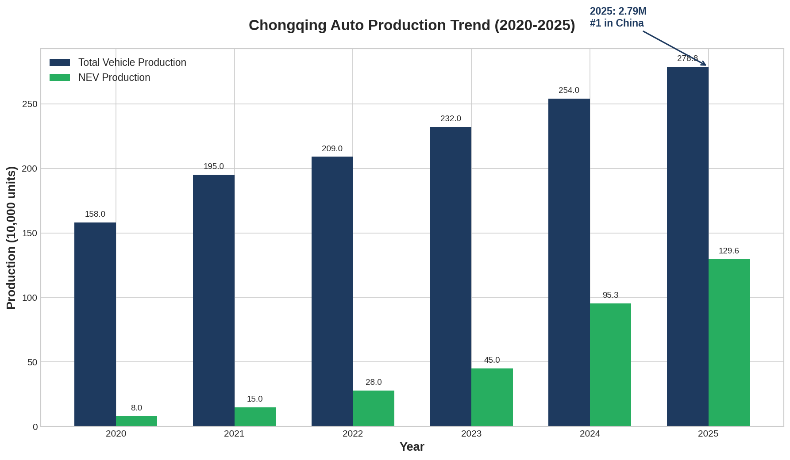
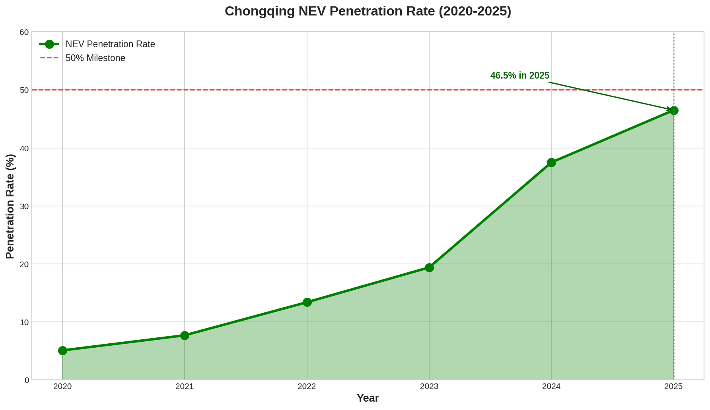
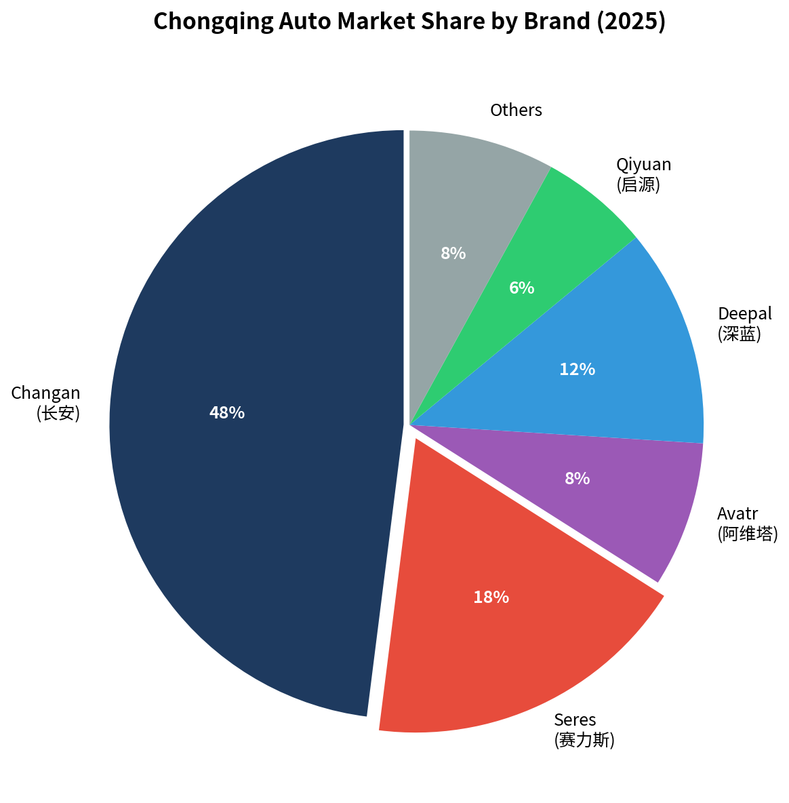
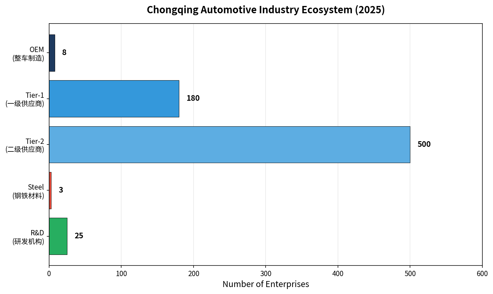
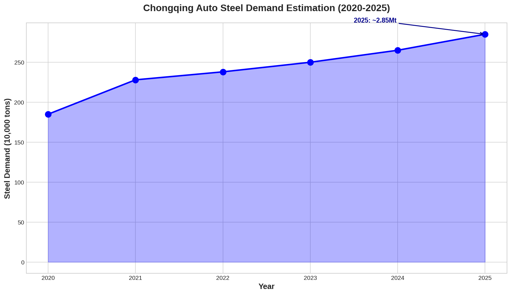
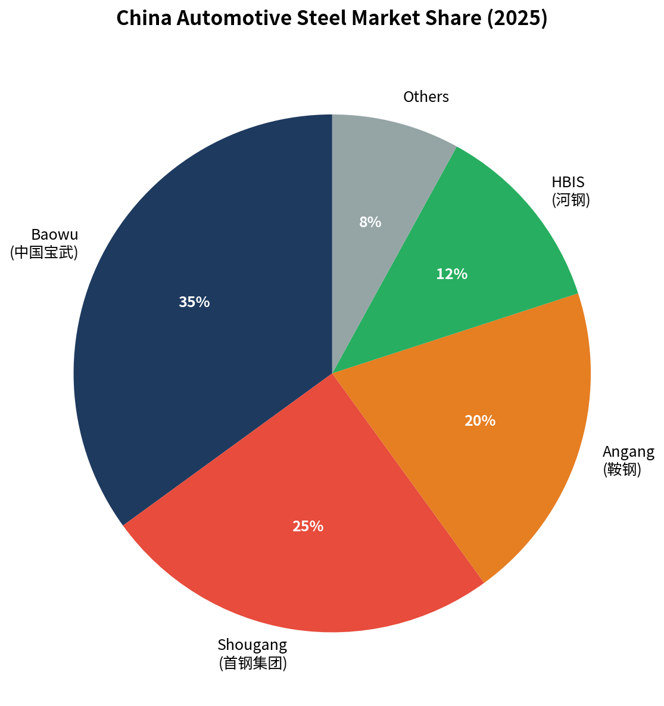
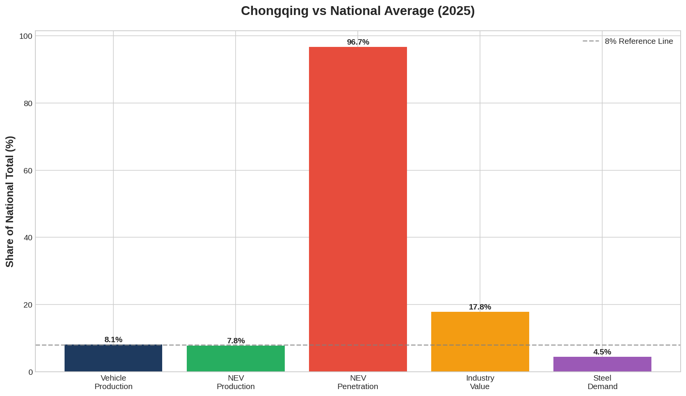
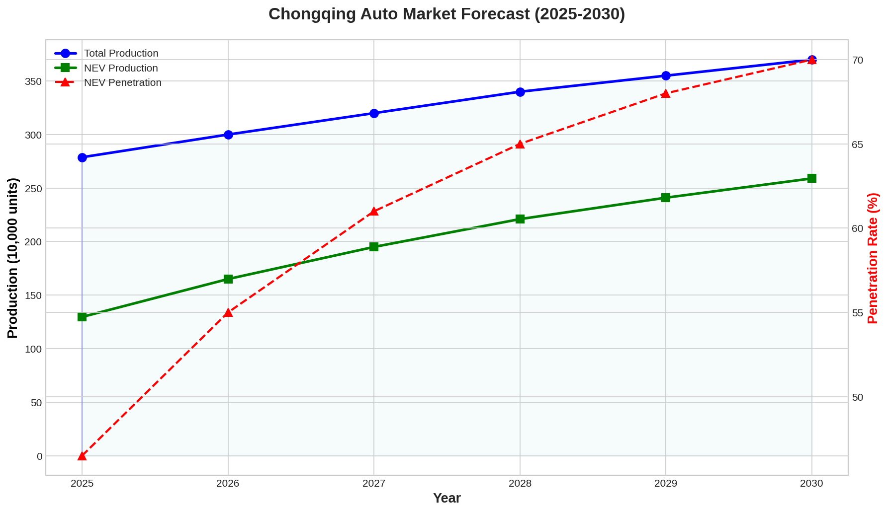

2025年重庆市汽车产量达 278.8万辆，同比增长9.7%，时隔九年重回全国城市第一
2025年新能源汽车产量 129.6万辆，同比增长36%，渗透率 46.5%
2025年重庆汽车用钢需求约 285万吨，占全国的4.5%，高强钢需求占比持续提升
重庆钢铁无冷轧产线，本地车企 75%汽车板需外购，主要来自宝武、鞍钢等
已形成 19家整车+1200家零部件 的完整产业链，集群规模突破8000亿元
| 指标 | 2025年数据 | 同比变化 |
|---|---|---|
| 汽车产量 | 278.8万辆 | +9.7% |
| 新能源汽车产量 | 129.6万辆 | +36% |
| 新能源汽车渗透率 | 46.5% | +9.0pp |
| 汽车用钢需求量 | 约285万吨 | +7.5% |
| 产业集群规模 | 8000亿元 | +12% |
| 整车企业数量 | 19家 | 稳定 |

重庆是中国重要的汽车制造业基地，被誉为"西南车都"。汽车产业是重庆第一大支柱产业，占全市工业总产值的 23%。2025年，重庆汽车产量达到 278.8万辆，时隔九年重回全国城市第一，仅次于广东省和上海市（省级行政区）。
历史发展：

重庆已形成央企有长安、民企有赛力斯双龙头带动，10多家整车企业布局的整车体系：
| 企业 | 2024年产量/销量 | 主要品牌 | 定位 |
|---|---|---|---|
| 长安汽车 | 销量268.3万辆 | 长安、阿维塔、深蓝、启源 | 央企龙头 |
| 赛力斯 | 销量42.7万辆 | 问界 | 新势力代表 |
| 庆铃汽车 | 商用车为主 | 五十铃 | 合资商用车 |
| 瑞驰汽车 | 新能源物流车 | 瑞驰 | 新能源商用车 |

重庆已形成19家整车企业、1200家规模以上零部件企业的完整产业体系：

基于重庆汽车产量和单车用钢量测算：
| 年份 | 汽车产量(万辆) | 单车用钢(吨) | 用钢需求(万吨) | 同比增速 |
|---|---|---|---|---|
| 2020 | 158 | 1.17 | 185 | - |
| 2021 | 195 | 1.17 | 228 | +23% |
| 2022 | 209 | 1.14 | 238 | +4% |
| 2023 | 232 | 1.08 | 250 | +5% |
| 2024 | 254 | 1.04 | 265 | +6% |
| 2025 | 278.8 | 1.02 | 285 | +7.5% |

重庆汽车用钢品种需求结构：
| 品种 | 需求量(万吨) | 占比 | 主要应用 |
|---|---|---|---|
| 冷轧汽车板 | ~110 | 38.6% | 车身外板、内板 |
| 高强钢(HSS/AHSS) | ~95 | 33.3% | 安全结构件 |
| 镀锌板 | ~45 | 15.8% | 耐腐蚀部件 |
| 无取向硅钢 | ~20 | 7.0% | 驱动电机 |
| 其他品种 | ~15 | 5.3% | 齿轮、轴承等 |
重庆钢铁（宝武重钢）现状：
重庆汽车用钢供应结构（估算）：

| 供应商 | 供应占比 | 主要产品 | 供应方式 |
|---|---|---|---|
| 宝武集团 | 35% | 冷轧汽车板、高强钢 | 从上海/武汉基地调拨 |
| 重庆钢铁 | 25% | 热轧板、中厚板 | 本地供应 |
| 鞍钢集团 | 20% | 冷轧板、镀锌板 | 从鲅鱼圈/沈阳基地运输 |
| 河钢集团 | 12% | 高强钢、含钒钢 | 从邯郸基地运输 |
| 其他 | 8% | 进口、其他地方钢企 | - |
长安汽车、赛力斯等主要需求的是冷轧和镀锌产品，重庆钢铁没有冷轧相关产线，故无法提供满足长安汽车生产的材料。
影响：
重庆汽车产业"定海神针"
里程碑：2025年12月实现中国品牌汽车第3000万辆下线
新势力黑马
里程碑：2026年1月问界第100万辆下线，M9连续蝉联50万+级销冠
西南板材龙头
战略定位：宝武集团西南战略支点，但无法直接供应本地车企汽车板

| 指标 | 重庆 | 全国 | 重庆占比 | 排名 |
|---|---|---|---|---|
| 汽车产量 | 278.8万辆 | 3453万辆 | 8.1% | 城市第1 |
| 新能源汽车产量 | 129.6万辆 | 1662.6万辆 | 7.8% | 城市前列 |
| 汽车用钢量 | 约285万吨 | 6390万吨 | 4.5% | - |
| 产业集群规模 | 8000亿元 | 约4.5万亿 | ~18% | 前列 |

| 年份 | 汽车产量(万辆) | 新能源产量(万辆) | 渗透率(%) | 用钢需求(万吨) |
|---|---|---|---|---|
| 2025 | 278.8 | 129.6 | 46.5 | 285 |
| 2026 | 300 | 165 | 55 | 305 |
| 2027 | 320 | 195 | 61 | 325 |
| 2028 | 340 | 221 | 65 | 345 |
| 2029 | 355 | 241 | 68 | 360 |
| 2030 | 370 | 259 | 70 | 375 |
重庆汽车产业重回全国第一，新能源转型成效显著，汽车用钢需求稳步增长。但本地汽车板供应存在结构性缺口，为外部钢铁企业带来机遇。